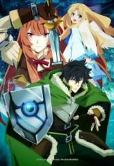
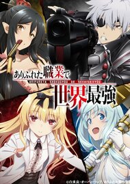
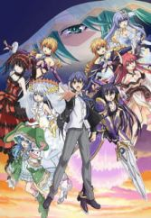
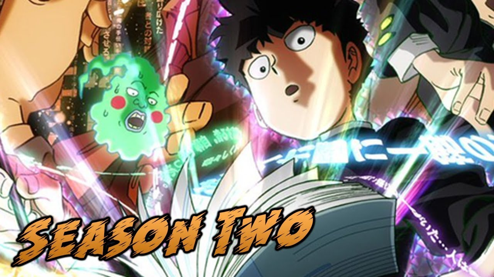
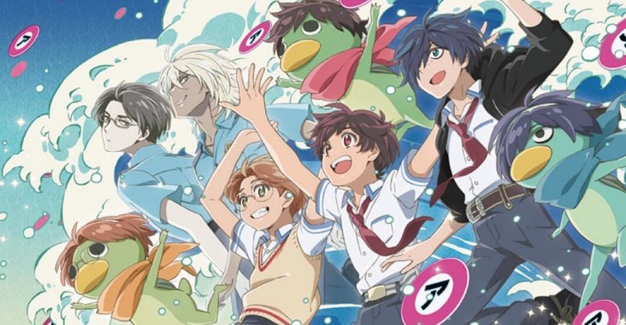
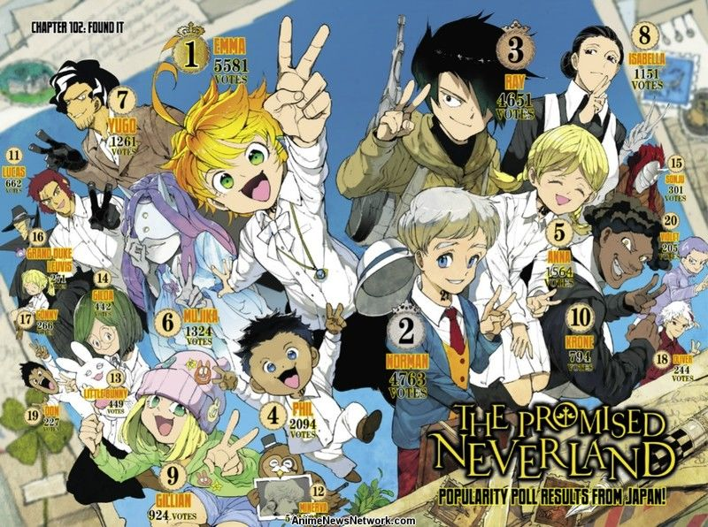
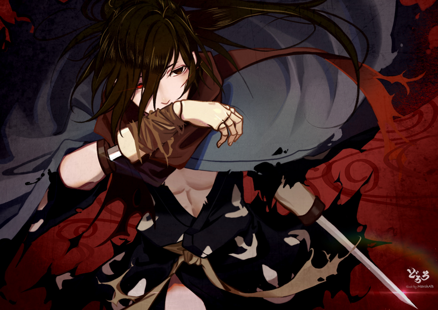
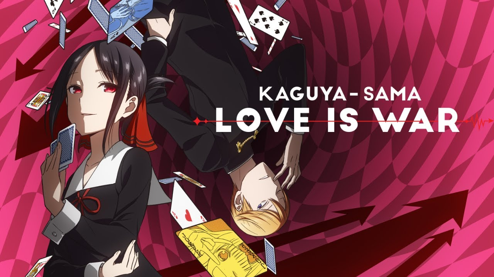
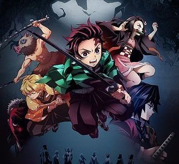
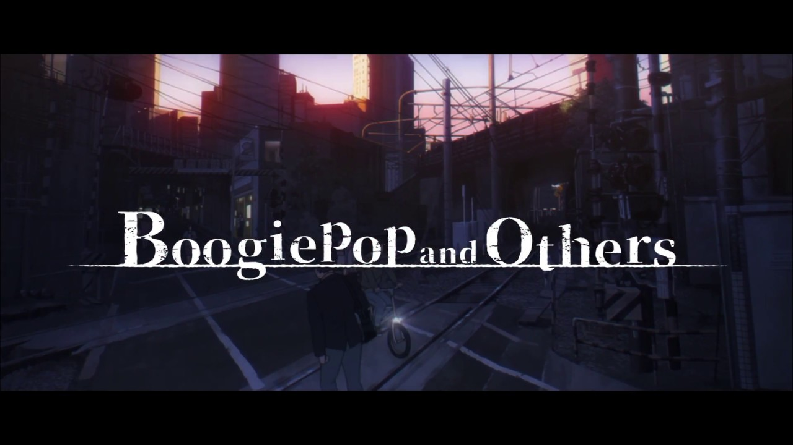

The Rising of the Shield Hero
Arifureta: From Commonplace to World's Strongest
Date A Live III
-

-
"Mob Psycho 100 II
Release date: January 7
Director: Yuzuru Tachikawa
Animation production: Bones
Coming hot on the tail of the series' breakout debut in 2016, Mob Psycho 100 II carries the torch of its predecessor's pedigree as one of the most hilarious, kinetic, and aesthetically eclectic anime to air in recent memory, pushing that envelope even further in its second season. With most, if not all, of the original staff from the first season returning for this outing, including animator Miya Sato, whose masterful "oil on glass" animation has distinguished so many of the previous season's stand-out sequences, the adventures of layabout con artist Reigen Arataka, his formidably powerful protege, Shigeo "Mob" Kageyama, and their poltergeist sidekick, Dimple, continue to ramp up as Mob journeys through adolescence in the face of ever-more perilous stakes. Aside from its adventurous animation, whip-sharp comedic timing, and impressive action sequences, Mob Psycho 100 II is a touching coming-of-age story of the relationship between a mentor and his pupil, and how the two help each to grow into more mature, earnest, and better-adjusted individuals. Come from the pyrotechnics, stay for the waterworks. Sarazanmai
Release date:April 6
Director: Nobuyuki Takeuchi, Kunihiko Ikuhara
Animation production: MAPPA, Lapin Track
Let's cut straight to the point: Sarazanmai is one of, if not the most bizarre, idiosyncratic, visually audacious, and thematically evocative anime to air in 2019. Describing just exactly what the hell Saranzanmai is to someone who has never seen an anime directed by Kunihiko Ikuhara (Revolutionary Girl Utena, Pengiundrum, Yurikuma Arashi) is about as difficult as it would be to describe the concept of 'water' and what the hell it means for something to be 'wet' to an alien. But, put simply, the show follows three middle-schoolers -- Kazuki Yasaka, Kuji Toi, and Enta Jinnai -- as they are transformed into kappa, amphibious beak-faced demons, after releasing Keppi, the guardian spirit of Asakusa, from the statue containing him and accidentally insulting him. To return to human form, the three are tasked with exorcising "kappa-zombies," malicious poltergeists, by performing elaborate dance numbers in a liminal dimension to steal the zombies’ shirikodama, magical spheres representing human desire, by forcibly removing them from their anuses. That is the tamest, most perfunctory description of what Sarazanmai is about, and it only gets stranger from here on out. Ikuhara is known for writing shows with socially-conscious premises powered by avant-garde visuals laden with labyrinthine levels of subtextual depth, and Sarazanmai is no different. Even knowing that, nothing can quite prepare you for the surprises this show has to offer. If nothing else, know this: It is one of the most daring, earnest, and empathetic series to air this year, and save for having watched one of Ikuhara's works in the past, you won’t see anything else quite like it.-
The Promised Neverland
Release date: January 11
Director: Mamoru Kanbe
Animation production: CloverWorks
The Promised Neverland follows 11-year-old Emma and her best friends, Norman and Ray, three of 37 orphaned children who live on a mysterious walled estate called the Grace Field House. Under the watchful eye of their caretaker known simply as Mom, the children are afforded the best that life can offer. Gourmet meals, plush beds, immaculate white outfits, and ample play time while they wait to one day be adopted by a loving family. However, the quiet idyllicism of Grace Field is swiftly shattered when Emma and Co. stumble upon a dark secret which underlies the House’s very existence. Horrified by their discovery, the three conspire to escape with the rest of children into the outside world, as the machinations of both their caretaker and Grace Field’s mysterious benefactors move steadily to completion. With a premise that sounds like a cross between From The New World and Kazuo Ishiguro’s novel Never Let Me Go, The Promised Neverland is an engrossing fantasy thriller with deft animation, savvy editing, and a taut atmosphere of mortal horror juxtaposed against a disquietingly cheerful exterior. Dororo
Release date: January 7
Director: Kazuhiro Furuhashi
Animation production: MAPPA, Tezuka Productions
In the midst of a terrible plague at the height of Japan’s Warring States period, Lord Daigo Kagemitsu of the Ishikawa province enacts a pact with 12 demons in order save his region and secure a path to a future of wealth and power. In exchange, each of the demons collect on Kagemitsu’s debt by taking body parts from his newly born son -- his limbs, his eyes, his tongue, his skin -- until the baby is rendered into a horrifying testament to his father’s sins. Years later, the boy, having survived his father’s attempt to dispose of him out of shame, grows up to become an itinerant swordsman named Hyakkimaru with a prosthetic body, swords for arms, and the extrasensory ability to "see" demons. Adapted from Ozamu Tezuka’s original manga and anime from the late ‘60s, Dororo tells the story of Hyakkimaru’s quest to slay demons, regain his humanity, and learn to love and open up to other people in a time of immense cruelty with the help of his companion, an orphaned thief by the name of Dororo. Produced by Studio Mappa (Kids on the Slope, Yuri on Ice, Banana Fish) and directed by Kazuhiro Furuhashi (Rurouni Kenshin, Hunter × Hunter '99, and Mobile Suit Gundam Unicorn), Dororo is an anime as viscerally violent as it is heartbreaking, and a series that should not be missed.Kaguya-sama: Love is War
Release date: January 12
Director: Mamoru Hatakeyama
Animation production: A-1 Pictures
In the “contest” of romance, the person who falls in love first -- or “catches feelings” as the kids say nowadays -- is the loser. Or at least, that’s the premise of A-1 Pictures’ Kaguya-Sama: Love Is War. Adapted from the popular ongoing manga of the same name, Love Is War follows the story of Miyuki Shirogane and Kaguya Shinomiya, two genius-level students attending the illustrious Shuch’in Academy, who quietly harbor feelings for one another. So far, so boring. But there’s a twist: Due to an ill-fated combination of entrenched class consciousness, emotional immaturity, and toxic adolescent pride, neither Shirogane or Shinomiya will acknowledge their feelings for the other. Rather than healthily process these emotions and talk things out like, y’know, adults, Shirogane and Shinomiya instead elect to orchestrate an elaborate series of public situations to force the other to confess their feelings first in a bid to save face. The result is a romantic comedy infused with the intensity of a psychological thriller that’s equal parts hilarious and infuriating for all the right reasons.-
Demon Slayer: Kimetsu no Yaiba
Release date: April 9
Director: Haruo Sotozaki
Animation production: Ufotable
Adapted from Koyoharu Gotōge’s ongoing Shonen Jump manga series, Demon Slayer: Kimetsu no Yaiba follows Tanjiro Kamado, a young charcoal merchant turned demon slayer, as he sets out on a journey of discovery and revenge to not only avenge his family’s grisly murder, but to find a cure for his younger sister Nezuko, who survived their family’s attack only to be transformed into a feral half-demon with an aversion to sunlight. Ufotable is perhaps best known for their work on the Fate franchise, a byzantine dark fantasy series renowned for its dazzling fight sequences and digital animation; fortunately, those qualities carry over to Demon Slayer: Kimetsu no Yaiba. While the show might not be as thematically-nuanced or poignant as, say, Dororo, Demon Slayer: Kimetsu no Yaiba is an impressive shonen adventure series in its own right and is sure to appeal to any fan of Naruto or Black Clover and stands as one of the most well-animated fantasy chanbara series to come out this year. Boogiepop and Others
Release date: January 4
Director: Shingo Natsume
Animation production: Madhouse
The latest anime adaptation of Kouhei Kadono's influential early aughts light novel series, Boogiepop and Others, is an anthology swirling around Boogiepop, a vigilante alter-ego of high schooler Touka Miyashita that possesses her body in moments of mortal crisis in the fight against a cadre of otherworldly creatures with ties to a shadowy entity known only as the Towa organization. As a series, Boogiepop and Others could be best described as a slow-burn supernatural mystery thriller dotted with adrenaline-spiking sequences of horror, action, and suspense set against a backdrop of stunning metropolitan vistas. As an adaptation of not only the first novel in Kadono's series, but several of the series' other celebrated entries such as Boogiepop at Dawn, Boogiepop Returns: VS Imaginator, and Boogiepop Overdrive:





